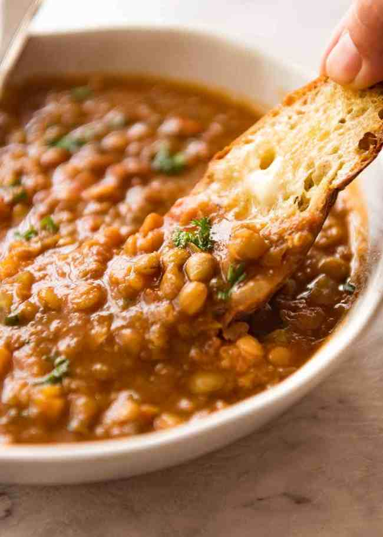

Instant Pot Lentil Soup

Description
Thanks to the Instant Pot, this is really just too easy to make.
I'm sure there are other brands of pressure cookers that do similar things.
This recipe is inspired by Michelle's Kitchen Creations, a Nova Scotia business that
was run by a woman who seems to have moved on to subsequent endeavors. She
created these ready-to-cook soups in a jar that were deliciously hearty. Because she is no longer in
business, I have had to try to figure all the ingredient ratios out on my own. My recommendation
to you is, thus, to also try to figure it out on your own, using this recipe only as a guide. You may be better at this than me.
Ingredients
- 1 cup red lentils
- 1 cup green lentils
- 1/2 medium onion
- 3 cloves of garlic
- 1 litre of water
- 1/2 tsp turmeric
- 1/4 tsp coriander
- 1/4 tsp cumin
- 1/2 tsp salt, plus more to taste
- 1 Bay leaf
- Pepper to taste
- 2 tbsp cooking oil
- Optional but recommended: 4 cups baby spinach
Steps
- Dice the onion.
- Mince the garlic.
- Saute the onion and garlic in the cooking oil in the Instant Pot until onions are soft.
- Add all the other ingredients to the Instant Pot.
- Press "Soup" on the Instant Pot.
- Do whatever you want for about 15-20 minutes and come back to hot soup. Serve with toasted bread on the side and pretend you are a medieval person having supper.